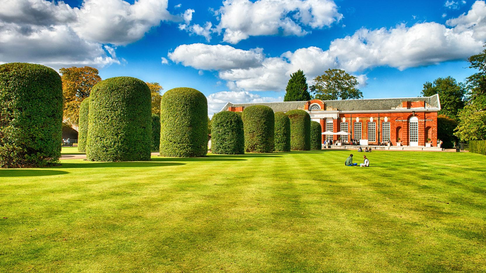

London
State of United Kingdom
London
London is the capital of Great Britain. It’s hard to say anything new about this city: Big Ben and Tower, British Crown and red coats of the guards, telephone booths and doubledeckers, Baker Street and the London Eye, and the Union Jack flag, after all. The fogs of the Albion’s capital hides cozy tea-drinking ceremonies and loud meetings in pubs, cozy streets where the Beatles walked, and the roar of fans at the football stadiums. Besides, it has huge international corporations, political organizations, and stock markets. London is a trendsetter and the pirate of hearts. It’s impossible to remain indifferent to it.
"We can't choose where we come from but we can choose where we go from there"


London Eye
The observation wheel is located on the south bank of the Thames river, in the Borough of Lambeth. While taking a ride on the London Eye, you can see almost all city districts and famous attractions nearby: Jubilee Gardens, Big Ben, Westminster Abbey. No wonder it is often called “the guide around London”. Moreover, the observation wheel is considered to be the national symbol that embodies the technological success of Great Britain at the beginning of the XXI century.
London Bridge
The Old London Bridge of nursery rhyme fame dates from 1176, when Peter of Colechurch, a priest and chaplain of St. Mary’s of Colechurch, began construction of the foundation. Replacing a timber bridge (one of several built in late Roman and early medieval times), Peter’s structure was the first great stone arch bridge built in Britain. It was to consist of 19 pointed arches, each with a span of approximately 7 metres (24 feet), built on piers 6 metres (20 feet) wide; a 20th opening was designed to be spanned by a wooden drawbridge.
Big Ben
Big Ben is the largest of the six bells in Westminster Palace. Many people think that it’s a name of the clock tower in London, but in fact, the name refers to the 13-ton bell, which is inside of the tower behind the clock dial. The official name of Big Ben was the Clock Tower of the Palace of Westminster. In 2012, by the decision of the British Parliament, this attraction of England was renamed to Elizabeth Tower (in honor of the 60th anniversary of the Queen’s reign). Despite other names, the name "Big Ben" remains the most popular and is used for the general designation of the tower, clock and bell.
Hyde

Hyde Park encompasses 350 acres of green space including 400 trees and a large lake. Start your trail of the park’s landmarks with the Diana Memorial Fountain, a tranquil monument built to honour the late Princess
Park
of Wales made from 545 pieces of Cornish granite. Consider stopping for lunch at one of the park’s cafes or bring your own picnic to enjoy in a sunny spot.